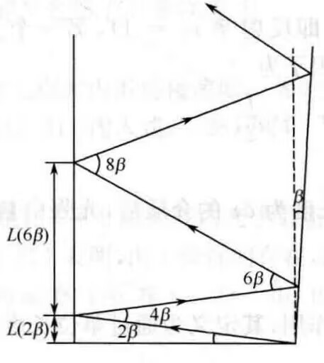
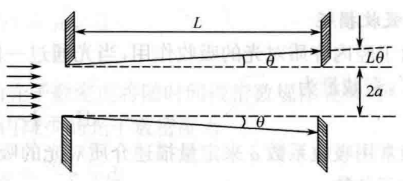

光学谐振腔具有光学正反馈作用，但同时也存在各种损耗.
损耗的大小是评价谐振腔的重要指标，在激光振荡过程中，光腔损耗的大小决定了激光振荡的阈值、达到稳定振荡状态腔内的光强、及激光的输出能量等.
本节分析无源开腔的损耗，并由此讨论表征无源腔质量的品质因数Q值.
无源开腔的损耗大致包括如下几个方面：
几何损耗根据几何光线观点，激光在腔内的往返传播过程可以用近轴光线来描述.
光线在腔内往返传播时，一些不平行于光轴的光线在某些几何结构的腔内经过有限次往返传播后，有可能从腔的侧面偏折出去.
即使平行于光轴的光线也存在偏折出腔外的可能.
这种损耗称为腔的几何损耗.
几何损耗的大小首先取决于腔的类型与几何尺寸.
e.g. 稳定腔内近轴光线的几何损耗为0，而非稳腔则有较高的几何损耗.
其次不同横模阶次的几何损耗也不同，一般在同一光腔内，高阶横模的几何损耗比缔结横模大.
衍射损耗根据波动光学观点：由于反射镜几何尺寸有限，光波在腔内往返传播时，必然因腔镜边缘的衍射效应而产生损耗.
为什么有限尺寸就会有衍射？
若在腔内插入其他光学元件，还应考虑其边缘或孔径的衍射引起的损耗.
这类损耗称为衍射损耗.
衍射损耗的大小与腔的几何参数、Fresnel数与横模阶次有关.
输出腔镜的透射损耗（输出损耗）通常稳定腔至少有一个反射镜是部分透射的，以获得必要的激光输出，这部分有用损耗称为光腔的透射损耗，它与输出镜的透射率有关.
这种损耗又称为输出损耗.
非激活吸收损耗、散射损耗激光通过腔内光学元件以及到达反射镜表面时，会发生吸收、散射而引起损耗.
此外，激活介质材料会对光造成非激活吸收损耗，介质的不均匀性与缺陷会造成散射损耗.
| 根据损耗是否与 激光横模模式有关 |
|
| 选择 损耗 |
几何偏折损耗 |
| 衍射损耗 | |
| 非选择 损耗 |
腔镜反射不完全引起的损耗 |
|
材料中的非激活吸收、散射； 腔内插入物（布儒斯特窗、调Q元件、调制器等）引起的损耗； 其他损耗 |
随腔内自再现模式的横模特性变化的损耗.
与光波模式无关，即对各个模式基本相同的损耗.
不论损耗由哪种原因引起，都可以用平均单程损耗因子定量描述.
设初始光强为\(I_0\)，在腔内往返一周后，光强衰减为：
$$I = I_0e^{-2\delta}$$则平均单程损耗因子为：
$$\delta = \frac{1}{2}\ln\frac{I_0}{I}$$若损耗是由多种因素引起的，每一种损耗可用相应的损耗因子\(\delta_i\)描述：
$$I = I_0e^{-2\delta_1}\cdot e^{-2\delta_2}\cdot e^{-2\delta_3}\cdots = I_0e^{-2\delta}$$则总损耗因子：
$$\delta = \sum\delta_i$$即由各种原因引起的总损耗因子，为腔内各个损耗因子的总和.
下面举例分析几种不同类型的损耗，推导出相应的单程损耗因子.
实际平行平面腔很难调整到完全平行，当两镜面构成小夹角\(\beta\)时，光在两镜面间往返有限次后，必然会逸出腔外.
如图所示，设开始时光线与一个镜面\(\text{M}_1\)垂直，当其在两镜面间多次反射后，入射光与反射光之间的夹角\(\theta_i\)依次为：\(2\beta,~4\beta,~6\beta\cdots\).
光线每往返一次，在镜面上移动的距离为\(L\theta_i\)，其中\(L\)为腔长.
[设]镜面横向尺寸为\(D\).
[设]光线在腔内往返\(m\)次后逸出腔外，则：
$$L[2\beta + 6\beta + \cdots + 2(2m - 1)\beta]\approx D$$
由于光在腔内往返\(m\)次后逸出腔外，故往返一次的损耗为\(1/m\)，因此可求得平均单程损耗因子为：
$$\delta_\beta = \frac{1}{2m} = \sqrt{\frac{\beta L}{2D}}$$衍射损耗随腔的类型、几何参数及激光振荡模式的不同而不同，是一个很复杂的问题，可通过求解腔的衍射积分方程得出.
这里只以均匀平面波在平面孔径上的Fraunhofer衍射为例，对腔的单程衍射损耗因子进行粗略的估算.
均匀平面波在腔长为\(L\)，横向尺寸（反射镜直径）为\(2a\)的平面开腔中往返传播，可等效为如图所示的孔阑传输线中的单向传播.

当光波入射在第一个圆孔上，穿过孔径时将发生衍射；由于衍射的作用，一部分光将偏离原来的传播方向，射到第二个圆孔之外，从而造成光能的损失.
根据Fraunhofer衍射公式，衍射光斑的第一极小值出现在：
$$\theta\approx 1.22\frac{\lambda}{2a} = 0.61\frac{\lambda}{a}$$方向.
若忽略第一暗环以外的光，并假设在中央亮斑内光腔均匀分布，则射到第二个圆孔以外损耗掉的光能与到达第二个圆孔的总光能之比，应该等于被中央亮斑照亮的孔外面积与中央亮斑总面积之比，即单程衍射损耗为：
$$\delta_d' = \frac{\pi(\theta L + a)^2 - \pi a^2}{\pi(\theta L + a)^2} \approx \frac{2\theta L}{a} = \frac{2L}{a}\cdot\frac{0.61\lambda}{a} = \frac{1.22}{a^2/\lambda L}\approx \frac{1}{a^2/\lambda L}$$当衍射损耗\(\delta_d'\)较小时，\(\delta_d'\)与平均单程损耗因子\(\delta_d\)相等，即：
$$\delta_d \approx \delta_d' \approx \frac{1}{a^2/\lambda L} = \frac{1}{N}$$在描述光学谐振腔的工作特性时，经常用到Fresnel数这个概念，它表明衍射光在腔内的最大往返次数，也表示从一面镜子中心看到另一面镜子上可划分的Fresnel半波带数（对平面波阵面而言）.
以上简化分析表明：衍射损耗随腔的Fresnel数的减小而增大，这一点对各开腔都具有普遍意义.
至于\(\delta_d\)与\(N\)的定量依赖关系，需要借助严格的衍射理论分析.
[设]两个反射镜的反射率分别为\(r_1\)与\(r_2\).
则初始光腔为\(I_0\)的光在腔内往返一周，经两个镜面反射后，光强变为：
$$I_1 = I_0r_1r_2$$根据单程损耗因子的定义式，设由镜面反射不完全引起的平均单程损耗因子为\(\delta\)，则：
\(r_1\approx 1,~r_2\approx 1\)时，有：
实际使用中，两个反射镜中的一个为全反镜（\(r_1 = 1\)），另一个为透过率\(T\ll 1\)（\(r_2 = r \approx 1\)）的输出镜.
此时，单程透射损耗因子为：
[设]由于腔内介质对光的吸收作用，当光通过一段长度为\(\mathrm{d}z\)的介质后，光强由初始光强\(I\)衰减为\(I'\)，衰减量为：
$$\mathrm{d}I = I - I'$$一般用吸收系数\(\alpha\)来定量描述介质对光的吸收作用：
通过单位长度介质后光强衰减的百分数.
$$\alpha = -\frac{\mathrm{d}I}{I\mathrm{d}z}$$从而可得到介质中不同位置的光强为：
$$I(z) = I_0e^{-\alpha z}$$若腔内介质的吸收系数时均匀的，则光在腔内往返一次后光强衰减为：
$$I_1 = I_0e^{-2\alpha l}$$由此可得，由介质吸收引起的单程损耗因子为：
$$\delta_{\text{absorb}} = \alpha l$$谐振腔的损耗特性除了用平均单程损耗因子定量表述外，还经常用腔内光子的平均寿命及谐振腔的品质因数等参量描述.
由单程损耗因子的定义式，初始光强为\(I_0\)的光束在腔内往返\(m\)次后光强变为：
$$I_m = I_0(e^{-2\delta})^m = I_0e^{-2\delta m}$$若取\(t = 0\)时刻的光强为\(I_0\)，则到\(t\)时刻，光在腔内往返的次数为：
$$m = \frac{t}{2L'/c}$$故\(t\)时刻光强为：
$$I_m = I_0e^{-\frac{t}{\tau_R}}$$\(\delta\)越大，\(\tau_R\)越小；即腔的损耗越大，腔内光强衰减得越快.
$$\left.I_m\right\rvert_{t = \tau_R} = \frac{I_0}{e}$$上式表明了时间常数\(\tau\)的物理意义：光强从初始值\(I_0\)衰减到\(I_0\)的\(1/e\)所用的时间.
腔的时间参数是描述光腔性质的一个重要参数.
\(\tau_R\)也可理解为“光子在腔内的平均寿命”，下面对此加以证明：
设\(t\)时刻腔内光子数密度为\(n(t)\)，其与光强\(I(t)\)的关系为：
$$I(t) = nh\nu v$$上式表明：由于损耗的存在，腔内光子数密度将随时间按指数规律衰减，到\(t = \tau_R\)时刻，衰减为\(n_0\)的\(1/e\).
在\(t\sim t+\mathrm{d}t\)时间内减少的光子数密度为：
$$-\mathrm{d}n = \frac{n_0}{\tau_R}e^{-\frac{t}{\tau_R}}\mathrm{d}t$$这\(-\mathrm{d}n\)个光子在\(0\sim t\)时间内存在于腔内，再经过无限小的时间间隔\(\mathrm{d}t\)后，就不存在了.
因此，其寿命为\(t\).
由此可计算出所有在\(t = 0\)时刻就存在于腔内的光子的平均寿命为：
$$\bar{t} = \frac{1}{n_0}\int_0^{+\infty}t(-\mathrm{d}n) = \frac{1}{n_0}\int_0^{+\infty}t\frac{n_0}{\tau_R}e^{-\frac{t}{\tau_R}}\mathrm{d}t = \tau_R$$因此，腔内的时间常数\(\tau_R\)即为腔内光子的平均寿命.
腔的损耗越小，\(\tau_R\)越大，腔内光子的平均寿命越大.
光学谐振腔中，也可以用品质因数\(Q\)值来描述它的损耗特性.
谐振腔\(Q\)值的普遍定义为：